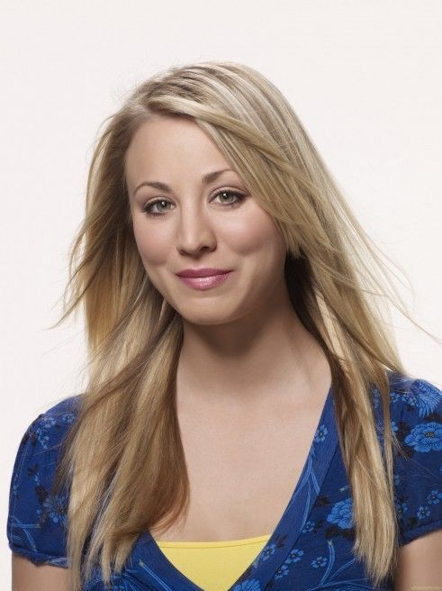
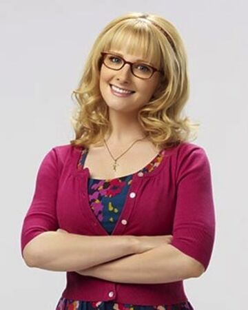
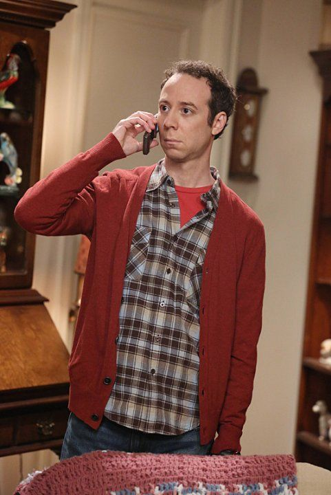
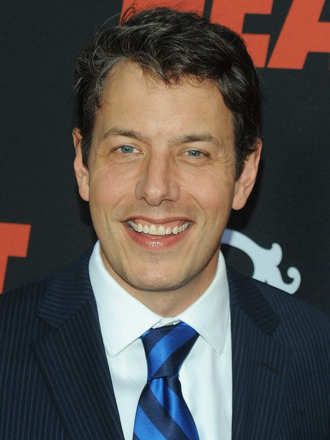
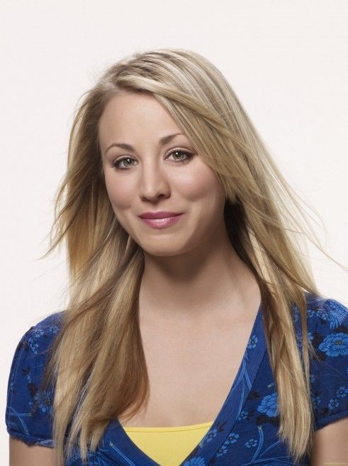
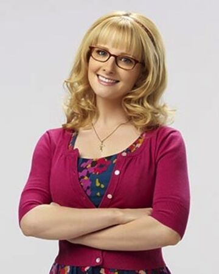
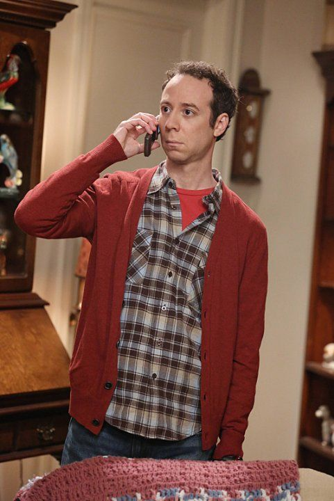
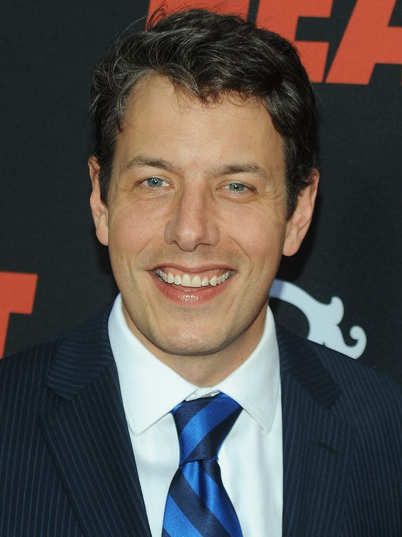
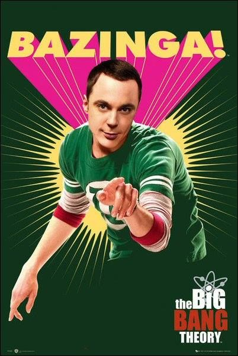
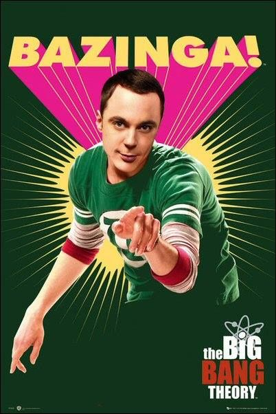

Na sitcom The Big Bang Theory, Leonard Hofstadter (Johnny Galecki) e Sheldon Cooper (Jim Parsons) são dois físicos brilhantes que trabalham no Instituto de Tecnologia da Califórnia e dividem um apartamento em Pasadena. Leonard vem de uma família cheia de prodígios e tem de lidar com a expectativa opressora de seus parentes. Por outro lado, Sheldon frequentou faculdade desde cedo, é o garoto de ouro do Texas com dois doutorados, mestrados e, mesmo assim, tem pouquíssimo traquejo social para se relacionar com outros seres humanos. Leonard e Sheldon passam a maior parte do tempo com os amigos Howard (Simon Helberg) e Raj (Kunal Nayyar), dois cientistas que também amam cinema, quadrinhos e videogames. A dinâmica do quarteto muda quando Penny (Kaley Cuoco), uma jovem atraente e aspirante a atriz, se muda para o apartamento da frente, encantando Leonard logo de cara. Apesar de ser muito diferente dos rapazes, aos poucos Penny se aproxima dos Geeks.
 







 

Aqui são os episódios que considero como melhores, importante mencionar que gosto de muitos e fica dificil escolher os melhores de fato, então serão os melhores que consigo me lembra nesse momento!:D